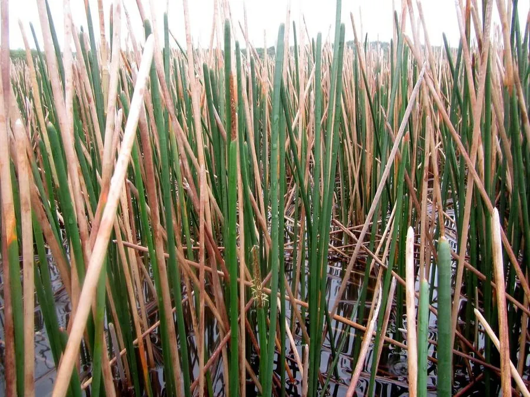

水生植物 · 植物界
荸荠 Eleocharis dulcis

莎草科多年生水生草本，地下球茎即荸荠，皮黑肉白、清脆多汁，是江南“水八仙”之一，原产中国与印度。
- 分类
- 门被子植物门纲木兰纲目禾本目科莎草科属荸荠属
- 栖息环境
- 水田、池塘、沼泽等浅水处，喜温暖、阳光充足
- 地理分布
- 原产中国与印度，中国长江以南水乡广泛栽培
- 保护级别
- 暂无评估
物种志
荸荠为莎草科荸荠属多年生水生草本，株高 0.5–1 米，秆圆柱形、直立丛生，中空有横隔，无叶片，仅基部有膜质叶鞘。花小，生于秆顶的穗状花序，花期 5–10 月；地下匍匐茎末端膨大成扁圆形球茎，即食用的荸荠。
荸荠原产中国和印度，中国长江以南水乡广泛栽培，喜温暖、阳光充足和浅水环境，靠球茎繁殖。它的地上部分像一丛细绿的葱管，地下球茎皮色黑褐、肉白清脆、富含淀粉和水分，可生食、煮食或制淀粉，是江南“水八仙”之一。荸荠栽培需保持浅水，采收时翻挖淤泥取球茎，也可在田里越冬后随时挖取，是冬春季节很受欢迎的时令食材，吃法多样。
形态与习性
- 株高秆高 0.5–1 米，丛生直立
- 花期5–10 月，花小，生于秆顶
- 果期花后结小坚果，地下形成球茎
- 光照喜充足阳光
- 水分浅水，水深 5–15 厘米
- 土壤肥沃的水田淤泥
- 繁殖以球茎种植为主
- 主要用途球茎（荸荠）食用、制淀粉
趣味知识
- 荸荠地上部分没有叶片，只有圆柱形的秆，靠秆进行光合作用。
- 它地下膨大的球茎就是荸荠，皮色黑褐、肉白清脆，是江南“水八仙”之一。
- 荸荠富含淀粉和水分，可生食、煮食或制淀粉。
- 荸荠靠球茎繁殖，栽培时把球茎埋入浅水淤泥即可。